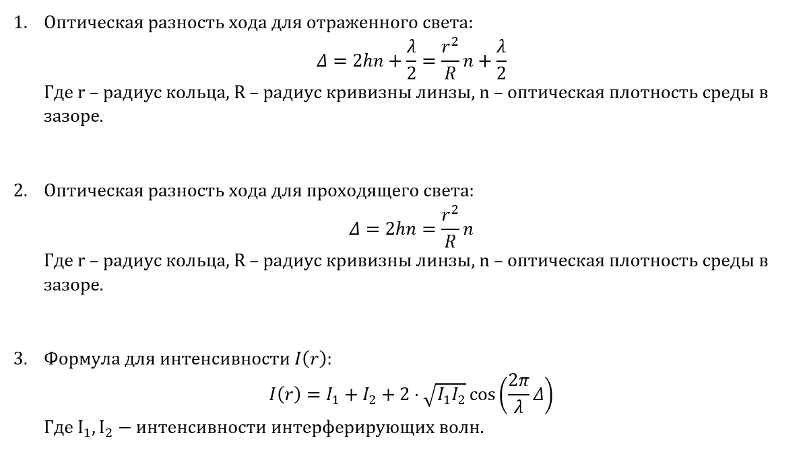

Задача на моделирование №5: Кольца Ньютона
M3201. Дудко Матвей
Обновите браузер
Построить
Параметры:
Наблюдение интерференционной картины:
В отраженном свете
В проходящем свете
Показатель преломления среды: [0 .. any]
Радиус кривизны линзы, м: [0 .. any]
Тип излучения:
Монохроматический источник
Две длины волны
Диапазон длин волн
Длина волны №1, нм: [380 .. 780]
Длина волны №2, нм: [380 .. 780]
Формулы, по которым производятся расчеты:
